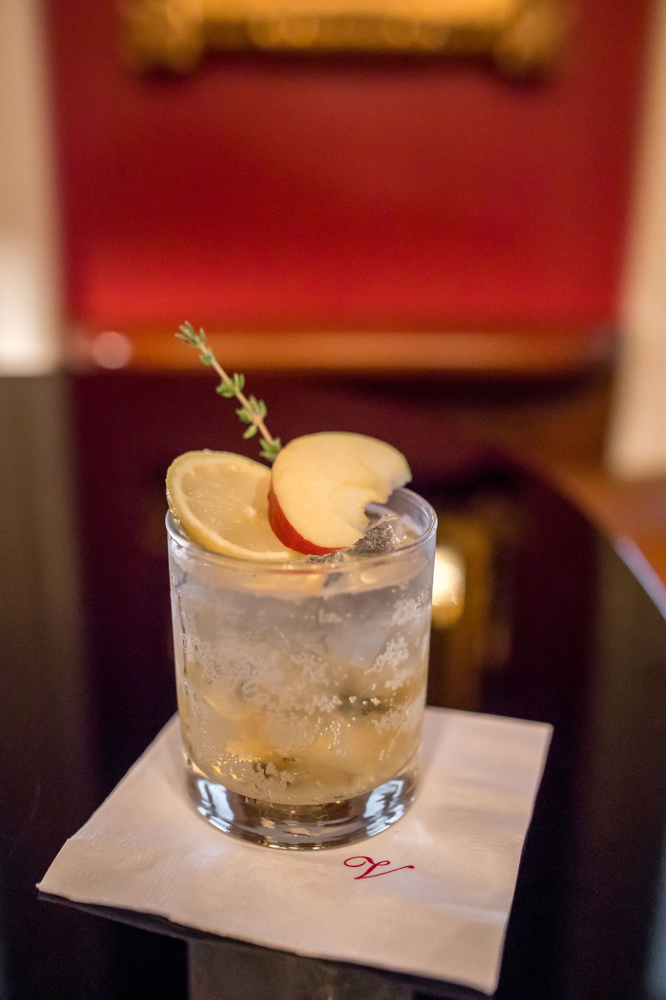
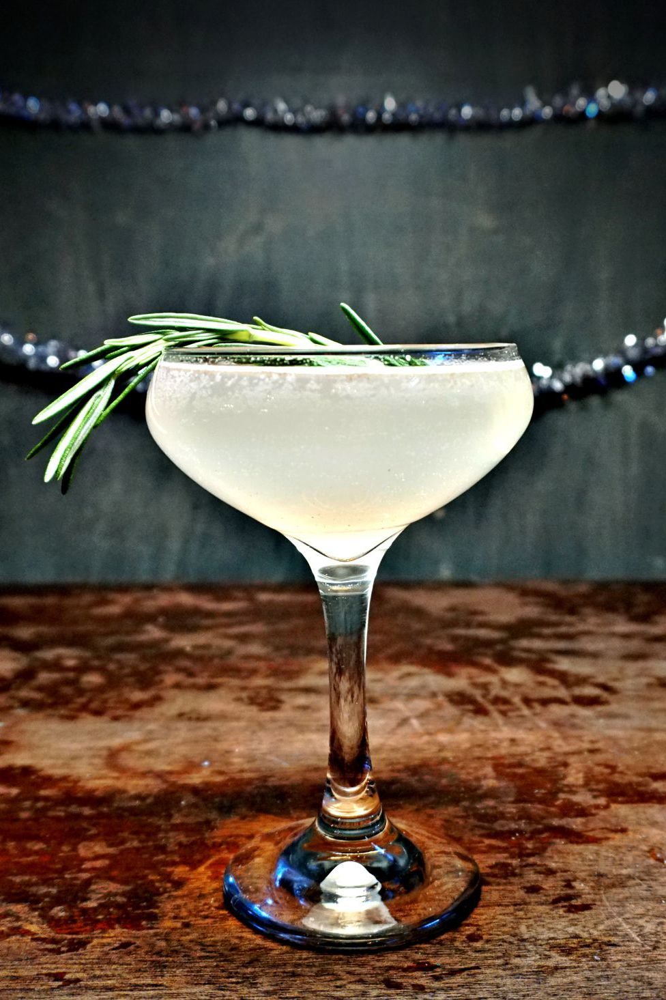
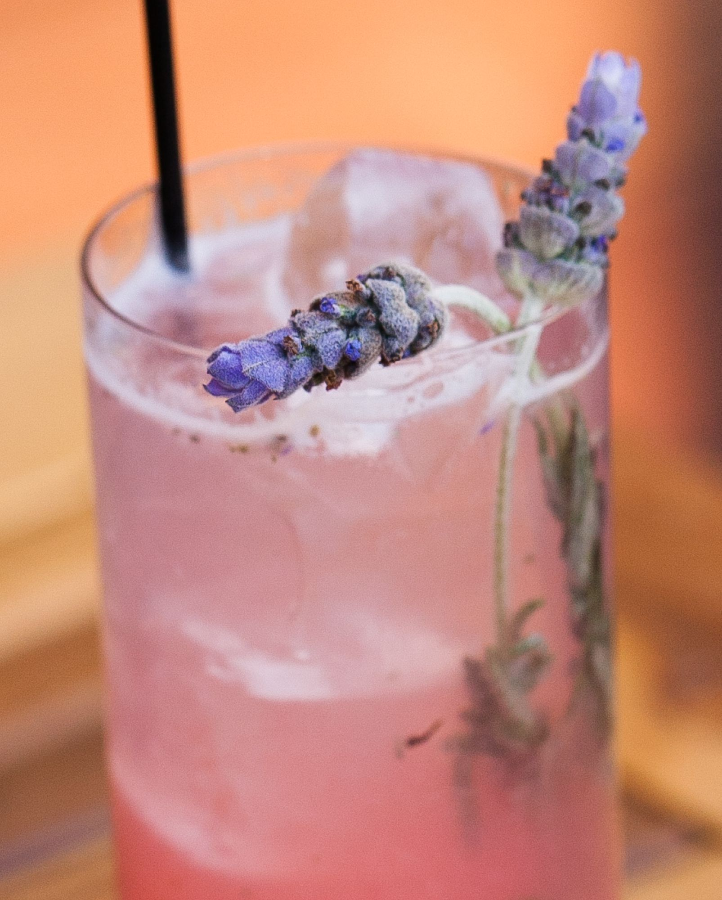
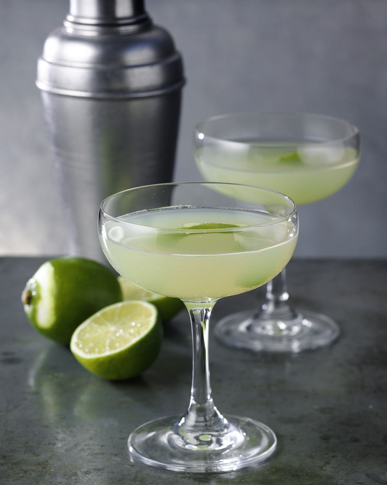

Gin is a distilled alcoholic drink that derives its predominant flavour from juniper berries (Juniperus communis). Gin is one of the broadest categories of spirits, all of various origins, styles, and flavour profiles, that revolve around juniper as a common ingredient.

AUTUMN FIZZ
Ingredients
2 oz Alibi Gin
0.25 oz lemon juice
agave nectar
Sparkling apple cider
Garnished with Thyme and apple
Instructions
Pour gin in shaker, Add lemon juice and agave nectar.
shake and then pour into a high ball glass.
Top with sparkling cider.
Garnish with fresh thyme and an apple slice.

THE RESOLUTION
Ingredients
2 oz gin
.5 oz simple syrup
.5 oz lemon juice
1 sprig rosemary
Instructions
Combine all ingredients into a shaker.
Shake, then double strain into large coupe glass.
Top with champagne. Garnish with rosemary sprig.

La-guapa
Ingredients
2 oz CH Distillery Lavender Gin
2 oz rhubarb simple syrup*
1 oz lemon juice
Top with Anna Codorniu Brut Rosé Cava
Instructions
Muddle rhubarb simple syrup, lemon juice, and fresh lavender sprigs.
Add dry gin. Shake and pour over ice. Top with brut rosé.
Garnish with fresh lavender sprig

The-Last-Word Jin
Ingredients
.75 oz Martin Miller's Gin
.75 oz Green Chartreuse
.75 oz Luxardo Maraschino Liqueur
.75 oz Lime Juice
Instructions
Combine ingredients in a cocktail shaker and shake with ice.
Strain into a cocktail coupe.